Project 3 - Face Morphing
General Overview
In this project, I implemented several algorithms related to face morphing.
First, I used the available correspondences tool to define label points for the images I wished to morph.
The online tool is located here.
Then, I used Delaunay to triangulate the points.
Afterwards, I defined the computeAffine(tri1_pts, tri2_pts) function, which calculates the affine transformation matrix.
Finally, I defined various other functions to manipulate the face images.
For example, morph() is used to slowly morph image A into image B, thereby creating the frames for a gif.
Similar logic can also be used to get the average face or to warp a single image onto another.
Finally, I used these functions to create a caricatures by exaggerating some facial features, and I also merged my face with the asian female average image to change the gender appearance on the mugshot.
Part 1: Defining Correspondences
I first used the public tool mentioned previously to create the pairs of corresponding points between my image and my friend's image.
My friend Henry is my roommate, so we took our mugshots with the same background and lighting.
Including the corners of the images, there are a total of 88 points per image.
I mainly highlighted where our faces differed, such as Henry having a chunk of hair blocking the top-right part of his forehead, Henry's hair shaped more like a mushroom, or my ears being less flat than Henry's.
I also used more points on important facial features like the eyes, nose, chin outline, and mouth.
I finally then generated a Delaunay triangulation of the average of the label points between the two images, which would lessen potential triangle deformations.
To show the edges of the triangles, I used green, and to show the label points, I used white dots.
Below are the two images and their after-image versions with the traingulation and label points:
Alan's image triangulated
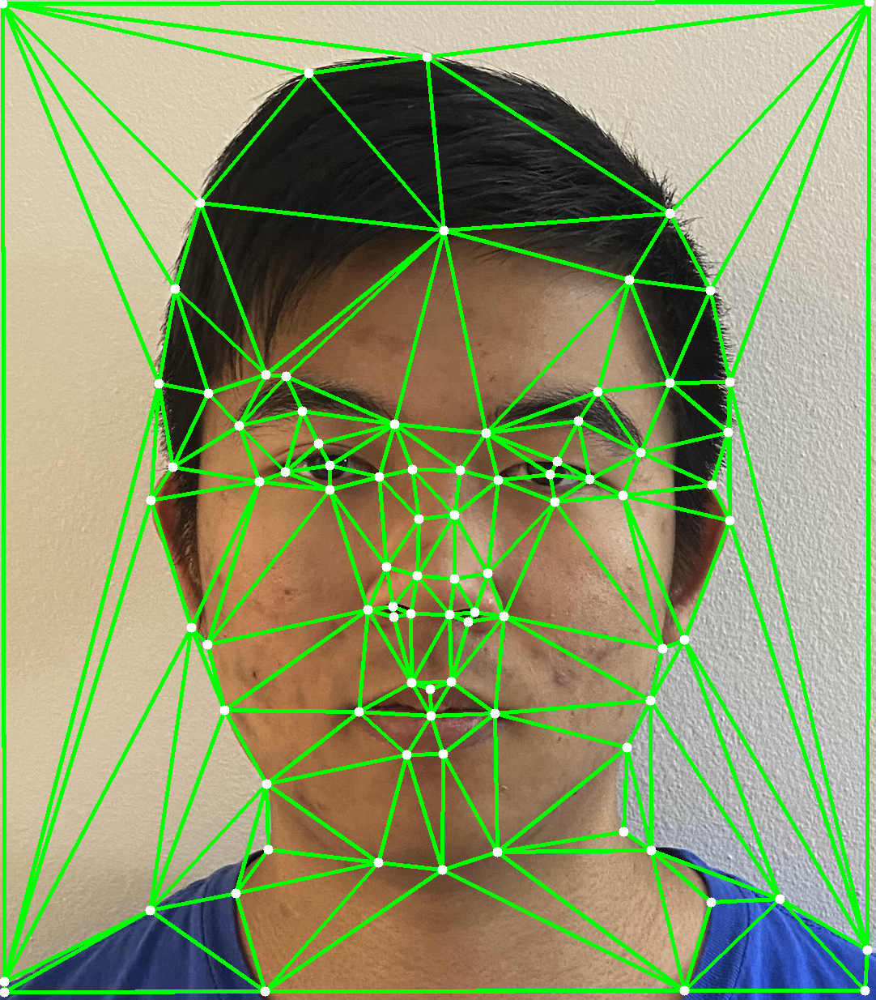
Henry's image triangulaged
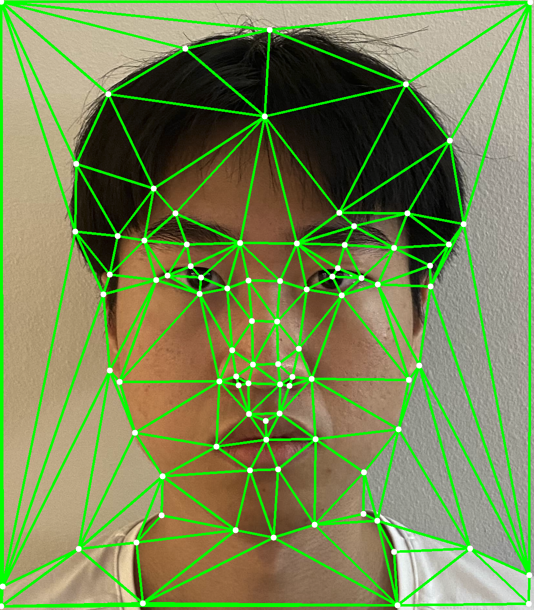
Part 2: Computing the "Mid-way Face"
To compute the midway face, I first got the average image by adding up the two images and dividing by 2.
Next, I use computeAffine() to get the transformation matrix from each triangle to the corresponding triangle in the other image.
Finally, I morph the two images together by using the transformation matrix to warp the images and then blend them together.
To blend the image, I simply took some weighted average of the images.
Because this part of the project is for getting the midway face, this meant that I took the average of the two images.
As shown below, the midway face shares quite a few distinct features between the start and end images.
Henry's hair is showing a bit on the top-right, the lips are starting to be more pronounced, and the shirt is a mixture between the two.
Below are the results:
Part 3: The Morph Sequence
This part heavily reused the helped functions I wrote for the previous part.
For each frame in the morphing animation, I simply just changed the warp_frac and dissolve_frac values accordingly.
In total, there are 46 frames.
The first frame 0 is purely my image.
The last frame 45 is purely Henry's image.
As shown, Henry's hair begins to "sprout" and grows out, while the ears begin to become more flat against the head.
The lips also become more pronounced and the eyes become more like Henry's, and the chin becomes more narrow.
Below is the gif of the morphing sequence:
Morphing Gif

Part 4: The "Mean Face" of a Population
The dataset of annotated faces that I used was the Danes dataset with 240 images (IMM Face Database).
Here is the link from the WayBack Machine from 2007.
For the subset of the population, I used the male neutral faces, filtering based on "1m" in the filename.
I first warped three images onto the average Dane face and produced the average face.
I then warped my face onto the average geometry, and then I warped the average Dane face onto my facial geometry.
For my face warped onto the average, the results make sense, because my original face was a bit tilted.
And, since my facial feature region was a bit smaller, this meant the center of my face looks enlarged based on this warp.
Similarly, for the average dane face warped onto my geometry, the center facial features become a bit more scrunched together.
And, since the label points as shown in the asf files only highlight the face and not the entire head structure, this meant my face warped onto the danish one looks like the forehead is compressed.
This makes sense, as my forehead is not mapped to the top forehead of the average dane face, as there are no corresponding points there.
Below are the results:
Original 16-1m.jpg

Original 20-1m.jpg

Warped 16-1m.jpg
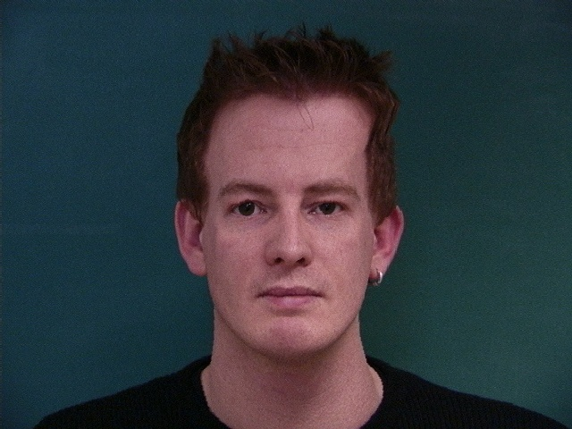
warped onto average dane neutral face
Warped 20-1m.jpg
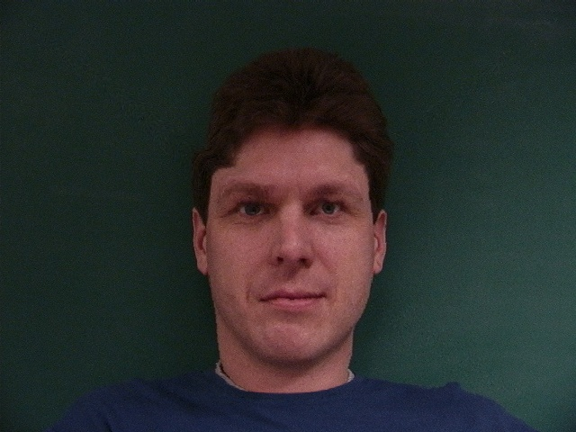
warped onto average dane neutral face
Warped 32-1m.jpg
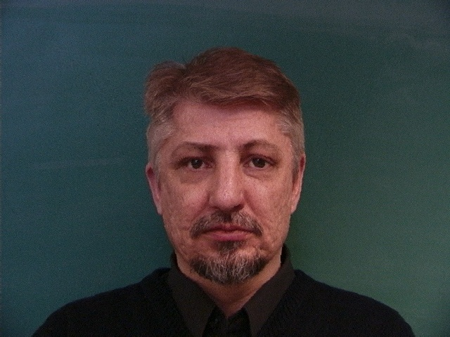
warped onto average population face
Average Face of Population
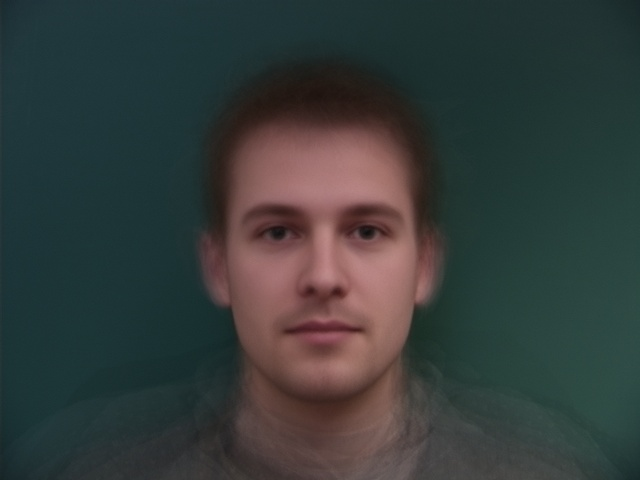
population is neutral male faces
Neutral face
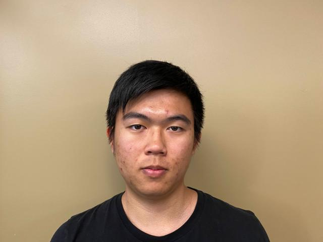
another mugshot, with my neutral face
My face warped
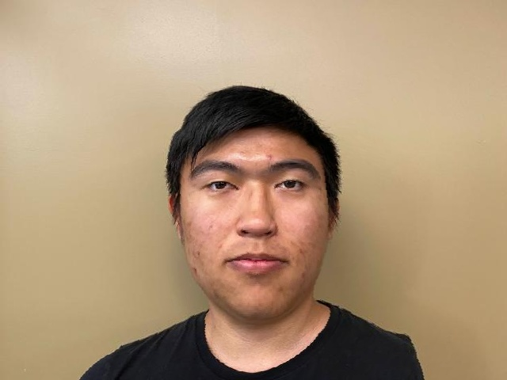
warped onto average face's geometry
Average face warped
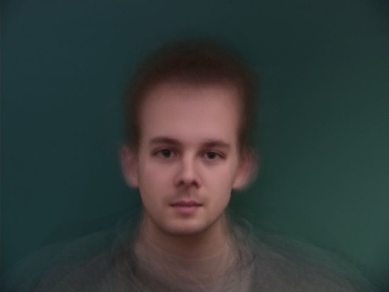
warped onto my face's geometry
Part 5: Caricatures: Extrapolating from the Mean
Using the average face from the previous part, I extrapolated from this mean to create caricatures of my face.
As show, as I increase alpha, the features of my face become more exaggerated.
My forehead also becomes more "crushed", since, as stated previously, the asf files don't have label points on the forehead.
So, only my eyes, nose, mouth, and chin are being exaggerated, while the rest of my facial features are being warped to accommodate for such changes.
Below are the results for when alpha = 0.75 and alpha = 1.5:
Bells & Whistles: Gender Change on Male Face
For this part, I used my face image and the image of the average of mongolian women.
The average image is found here.
In total for this part, I produced three images.
The first is morphing just the shape, so I morphed my face onto the average's geometry.
The next is morphing just the appearance, so I morphed the average's appearance onto my geometry.
Finally, I morphed both the shape and appearance together.
The final result does show some more feminine features on my face.
Below are the results:
Average female mongolian face
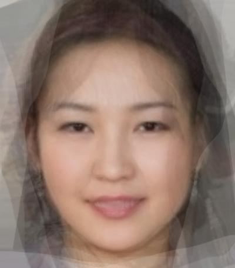
Morphing appearance only
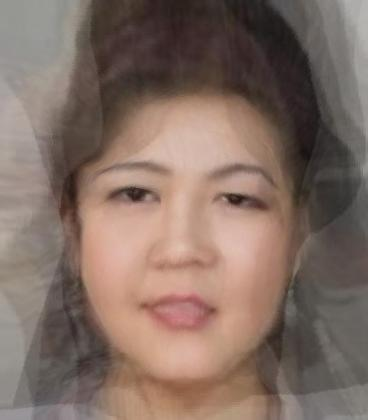
Morphing both together
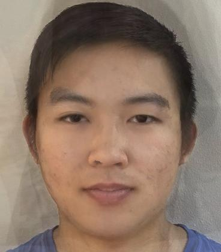
{kind=link}